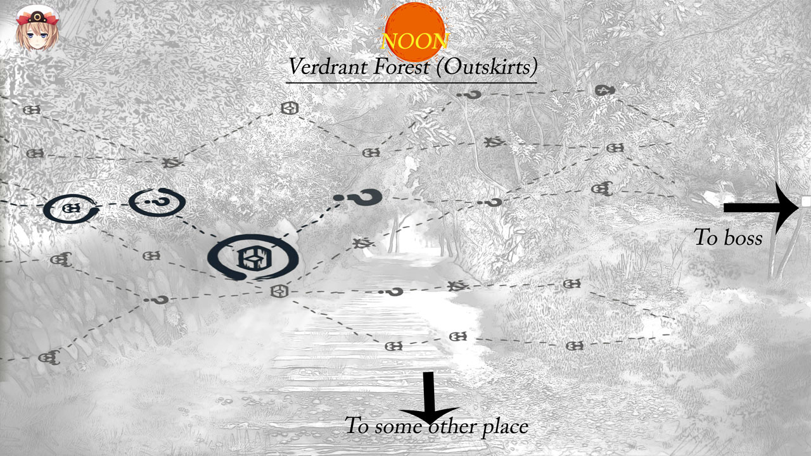

Gameplay elements:
Maps:
Maps are the equivalent of walking in the game. Exploration and travel will be primarily through buttons and maps. Here's one way it might look like:
First, the player is shown where they're at in the world map. They see where they are (say, the arrow) and where they want to go (the cart in the forest), and then click on the place they are currently at to see the route. This opens another smaller map showing their immediate surroundings, like this one:

This image was taken from the middle of the map; scrolling left would take you to the starting point and scrolling right to the end of the location (like to the edge of the forest and into the next location). Maps start at a single point and branch out, giving players many ways to traverse. (PS the icons for the maps below were 'inspired' by Slay the Spire)
Here, you basically click the small nodes and work your way accross till you reach the end of the map. Each node leads to different outcomes like combat, treasure, meeting new characters, character interactions due to the location or other scenarios.
So, you click on the first, starting node. It shows the following screens:
Clicking on/touching the screen takes you forward (click on the images to see them bigger)-


Of course, it needs more work and polish but it's an interesting way to tell a story, and one I definitely see potential in.
The dialogue ends with the old lady asking for money despite Eva's charms, and Eva running away without looking back.
A bit later Eva finds herself in her first battle, which is the tutorial battle for the player. Honestly, the simplest way I can describe it (which would be wrong, but bear with me) is a Pokemon battle with more images. There are 2 things which make it different from Pokemon:
1. The fights are reactive, not turn based: This basically means you can react to attacks. So if someone casts frost on you, unlike turn based systems where you just take damage you can counter it by an even stronger attack, a weaker attack of fire (if fire>frost) as well as dodging or blocking it, or even using the environment to fend off the attack.
2. Everything focusses on Narrative: You are not fighting a battle, you are living it, just like how you feel when you read a nice action book. You might have a limited set of moves but seemingly unlimited ways of using them. There is a heavy layer of abstraction over the player which makes them feel they aren't using moves like 'flamethrower' in every battle but using fire in different ways like 'shooting flames that reduced their wooden shield to ashes'. I have been working on a 'Narrative engine' that takes in the player's attack (flamethrower), the enemy's move (raising shield to defend), does damage calculation (taking into consideration that fire burns wood) and outputs the narrative you've read above.
This is a completely cooked up scenario, but imagine you've got the villain running towards Eva to smack her.
 Firstly, whenever the player wants they can click on their character's name to see their status -
Back to the story, our hero has a couple options, namely to dodge or counterattack -
Firstly, whenever the player wants they can click on their character's name to see their status -
Back to the story, our hero has a couple options, namely to dodge or counterattack -
 She chooses Recall, a move that rewinds time and unleashes any attack made during the course of the battle at the enemy.
This leads to a small scene of Eva recalling some rocks -
And slamming it into Nappa (sorry I didn't draw him getting hit, but you get the idea, she stopped his attack by attacking him instead. The turn ends once everyone has made a move, which can be out of order).
She chooses Recall, a move that rewinds time and unleashes any attack made during the course of the battle at the enemy.
This leads to a small scene of Eva recalling some rocks -
And slamming it into Nappa (sorry I didn't draw him getting hit, but you get the idea, she stopped his attack by attacking him instead. The turn ends once everyone has made a move, which can be out of order).
Other mechanics:
RPG:
The game uses the usual rpg systems like levels, skills, items and a bit of crafting.
Mini-games:
Darkness: You are in a dark cave and the only light is a small green flicker the size of your cursor conjured by the Prince. Expecting some nice spooky atmosphere, character interactions and jump scares!
Chase in the maze: Standard baddies chasing hero in a city like maze, with the hero able to confuse the baddies by manipulating time. Adds variety to the game.
That's all the gameplay I have. It might be simple, but simple is good. I don't want to reinvent the wheel, and this much is doable even for me.